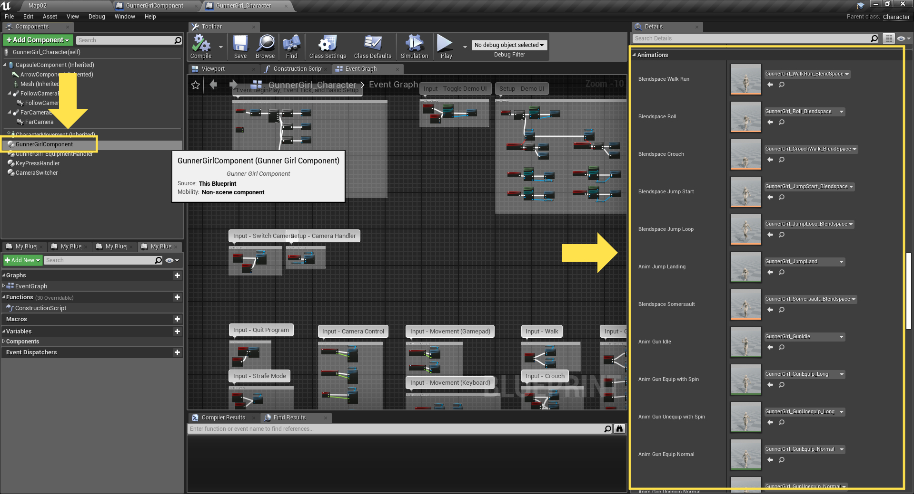

Female Shooter - User Guide
Using Custom Animations
Starting from version 1.2.0, the Female Shooter template stores its animations as variables inside the GunnerGirlComponent.
This is done to make it easier for the user to replace each animations according to their requirements.
The following guide will explain how to switch the default animations of the template and replace it with your custom animations.
The steps are as follows,
- Open your character's blueprint
- Select the GunnerGirlComponent
-
Go to Details tab, find the Animations category
There you will find a list of variables, either Animation Sequence or Blendspace, whose value can be modified.

-
Assign your custom animations on each of the variables that you wish to replace.
-
Some of the animations will require AnimNotify events to be added in order to make them work with the Female Shooter template.
See below for a list of animations that require these AnimNotify events.
Animation/Blendspace List
The following is the list of customizable animation/blendspace variables that can be assigned by the user.
Click on each animation/blendspace to see what AnimNotify is required for that animation.
- Blend Walk Run
- Blend Roll
- Blend Crouch
- Blend Jump Start
- Blend Jump Loop
- Anim Jump Landing
- Blend Somersault
- Anim Gun Idle
- Anim Gun Equip With Spin
- Anim Gun Unequip With Spin
- Anim Gun Equip Normal
- Anim Gun Unequip Normal
- Anim Gun Shoot Left Arm
- Anim Gun Shoot Right Arm
- Blend Gun Aim Left Arm
- Blend Gun Aim Right Arm
AnimNotify Events
The following is the list and descriptions of all the AnimNotify events that might be needed by the custom animations.
-
MovementDisabled
Used to disable character movement. -
MovementEnabled
Used to enable character movement. -
GunInHand
Used to attach both guns to the character's hand.
By default this is set to the Weapon_L and Weapon_R socket on the skeleton.
Socket name can be modified by changing it in the Details tab of the GunnerGirlComponent. -
GunInHolster
Used to attach both guns to the character's holster
By default this is set to Holster_L and Holster_R socket on the skeleton.
Socket name can be modified by changing it in the Details tab of the GunnerGirlComponent. -
GunShootAvailable
Used to tell the system that it can perform a shot whenever it's ready.For this version, the shooting mechanism is animation controlled.
User can call GunnerGirlComponent.Shoot to tell the system to start the dual shooting animation.The actual timing of when the shot is released is triggered by placing the following AnimNotify inside the character shooting animations:
- LeftGunShot AnimNotify
- RightGunShot AnimNotify
-
GunShootUnavailable
Used to tell the system to ignore any request to shoot the guns.
To re-enable the shooting functionality, use the GunShootAvailable AnimNotify -
GunEquipped
Used to tell the system to activate GunMode, this will enable the following settings:- Switch the default animation from Idle to GunIdle.
- Enable Strafe Mode (character will always face towards the camera's forward direction).
- Dispatch GunnerGirlComponent.OnGunModeChanged event
- Dispatch GunnerGirlComponent.OnStrafeModeChanged event
-
GunUnequipped
Used to tell the system to deactivate GunMode, this will:- Set the default animation to Idle instead of Gunidle
- Disable Strafe Mode (character will face whichever direction they are currently moving to)
- Dispatch GunnerGirlComponent.OnGunModeChanged event
- Dispatch GunnerGirlComponent.OnStrafeModeChanged event
-
GunSpinStart
Used to tell the Guns to start spinning, the spinning movement will continue until GunSpinStop is called.
The gun spinning animation is performed independently from the character's animation.
(the gun can spin on its own without the character doing any animations) -
GunSpinStop
Used to tell the Guns to stop spinning, will only be performed if GunSpinStart was called previously. -
LeftGunShot
Used to tell the system that the left gun just released a shot, this will:- Automatically create a muzzle flash.
- Dispatch the GunnerGirlComponent.OnLeftGunShot event
-
RightGunShot
Used to tell the system that the right gun just released a shot, this will:- Automatically create a muzzle flash.
- Dispatch the GunnerGirlComponent.OnRightGunShot event
-
IsLandingStart
Used to tell the system that the character have reached the ground and is currently processing their landing.
Not actively used by the system. -
IsLandingDone
Used to tell the system that the character have finished their landing and will switch to Idle animation now.
Not actively used by the system. -
JumpStartBegin
Used to tell the system that the character is starting a jump.
Not actively used by the system. -
JumpStartComplete
Used to tell the system that the character have finished their preliminary jump animation and will move to JumpLoop animation now.
Not actively used by the system. -
RollBegin
Used to tell the system that the character is starting a roll.
Not actively used by the system. -
RollComplete
Used to tell the system that the character have finished their roll.
Is used by the system to cleanup some animation settings. -
SomersaultComplete
Used to tell the system that the character have finished their somersault.
Is used by the system to cleanup some animation settings. -
FlyModeEnabled
Used to disable normal physics during airborne root motion animation.
Safe to use for single player, but might not work properly for replication. -
FlyModeDisabled
Used to re-enable normal physics at the end of an airborne root motion animation.
Safe to use for single player, but might not work properly for replication.